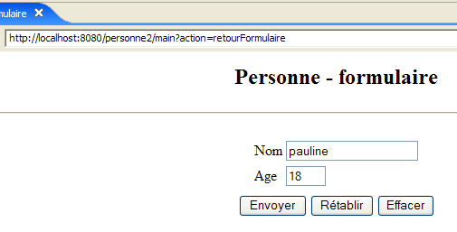
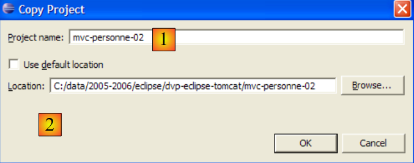
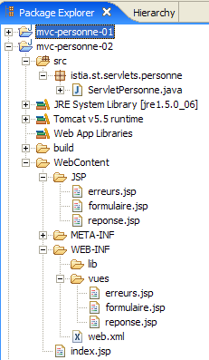
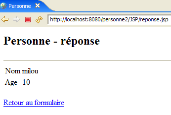

6. Application web MVC [personne] – version 2
Nous allons maintenant proposer des variantes de l'application [/personne1] précédente que nous appellerons [/personne2, /personne3, ...]. Ces variantes ne modifient pas l'architecture initiale de l'application qui reste la suivante :

Pour ces variantes, nous ferons plus court dans nos explications. Nous ne présenterons que les modifications apportées vis à vis de la version précédente.
6.1. Introduction
Nous nous proposons maintenant d'ajouter à notre application une gestion de session. Rappelons les points suivants :
- le dialogue HTTP client-serveur est une suite de séquences demande-réponse déconnectées entre elles
- la session sert de mémoire entre différentes séquences demande-réponse d'un même utilisateur. S'il y a N utilisateurs, il y a N sessions.
La séquence d'écran suivante montre ce qui est maintenant désiré dans le fonctionnement de l'application :
Echange n° 1
 |  |
La nouveauté vient du lien de retour au formulaire qui a été rajouté dans la vue [erreurs].
Echange n° 2
 |  |
Dans l'échange n° 1, l'utilisateur a donné pour le couple (nom,âge) les valeurs (xx,yy). Si au cours de l'échange, le serveur a eu connaissance de ces valeurs, à la fin de l'échange il les "oublie". Or on peut constater que lors de l'échange n° 2 il est capable de réafficher leurs valeurs dans sa réponse. C'est la notion de session qui, ici, va permettre au serveur web de mémoriser des données au fil des échanges successifs client-serveur. Il y a d'autres solutions possibles pour résoudre ce problème.
Au cours de l'échange n°1, le serveur va mémoriser dans la session le couple (nom,age) que le client lui a envoyé afin d'être capable de l'afficher au cours de l'échange n° 2.
Voici un autre exemple de mise en oeuvre de la session entre deux échanges :
Echange n° 1
 |  |
La nouveauté vient du lien de retour au formulaire qui a été rajouté dans la page de la réponse.
Echange n° 2
 |  |
6.2. Le projet Eclipse
Pour créer le projet Eclipse [mvc-personne-02] de l'application web [/personne2], nous allons dupliquer le projet Eclipse [mvc-personne-01] afin de récupérer l'existant. Pour cela procédons de la manière suivante :
[clic droit sur projet mvc-personne-01 -> Copy] :

puis [clic droit dans Package Explorer -> Paste] :
 |  - indiquons en [1] le nom du nouveau projet et en [2] le nom d'un dossier existant mais vide |
Le projet [mvc-personne-02] est alors créé :

Il est identique pour l'instant au projet [mvc-personne-01]. Il va nous falloir faire quelques modifications à la main avant de pouvoir l'utiliser. Allons dans la vue [Servers] et essayons d'ajouter cette nouvelle application à celles gérées par Tomcat :
 |  |
On voit qu'en [1], le nouveau projet [mvc-personne-02] n'est pas vu par Tomcat. Pour qu'il le voit, un fichier de configuration du projet [mvc-personne-02] doit être modifié. Utilisons l'option [File / Open File] pour ouvrir le fichier [<mvc-personne-02>/.settings/.component] :
<?xml version="1.0" encoding="UTF-8"?>
<project-modules id="moduleCoreId">
<wb-module deploy-name="mvc-personne-01">
<wb-resource deploy-path="/" source-path="/WebContent"/>
<wb-resource deploy-path="/WEB-INF/classes" source-path="/src"/>
<property name="java-output-path" value="/build/classes/"/>
<property name="context-root" value="personne1"/>
</wb-module>
</project-modules>
La ligne 3 désigne le nom du module web à déployer au sein de Tomcat. Ce nom est, ici, le même que celui du projet [mvc-personne-01]. Nous le changeons en [mvc-personne-02] :
<wb-module deploy-name="mvc-personne-02">
Par ailleurs, nous pouvons en profiter pour modifier, ligne 7, le nom du contexte de l'application [mvc-personne-02] qui est en conflit avec celui du projet [mvc-personne-01] :
<property name="context-root" value="personne2"/>
Cette seconde modification pouvait être faite directement au sein d'Eclipse. En revanche, je n'ai pas vu comment faire la première sans passer par le fichier de configuration.
Ceci fait, nous sauvegardons le nouveau fichier [.content] puis nous quittons et relançons Eclipse afin qu'il soit pris en compte.
Une fois Eclipse relancé, essayons de faire l'opération qui a échoué précédemment :
|  |
Cette fois-ci, le projet [mvc-personne-02] est bien vu. Nous l'ajoutons aux projets configurés pour être exécutés par Tomcat :

6.3. Configuration de l'application web [personne2]
Le fichier web.xml de l'application /personne2 est le suivant :
<?xml version="1.0" encoding="UTF-8"?>
<web-app id="WebApp_ID" version="2.4"
xmlns="http://java.sun.com/xml/ns/j2ee"
xmlns:xsi="http://www.w3.org/2001/XMLSchema-instance"
xsi:schemaLocation="http://java.sun.com/xml/ns/j2ee http://java.sun.com/xml/ns/j2ee/web-app_2_4.xsd">
<display-name>mvc-personne-02</display-name>
<!-- ServletPersonne -->
<servlet>
<servlet-name>personne</servlet-name>
<servlet-class>
istia.st.servlets.personne.ServletPersonne
</servlet-class>
<init-param>
<param-name>urlReponse</param-name>
<param-value>
/WEB-INF/vues/reponse.jsp
</param-value>
</init-param>
<init-param>
<param-name>urlErreurs</param-name>
<param-value>
/WEB-INF/vues/erreurs.jsp
</param-value>
</init-param>
<init-param>
<param-name>urlFormulaire</param-name>
<param-value>
/WEB-INF/vues/formulaire.jsp
</param-value>
</init-param>
<init-param>
<param-name>urlControleur</param-name>
<param-value>
main
</param-value>
</init-param>
<init-param>
<param-name>lienRetourFormulaire</param-name>
<param-value>
Retour au formulaire
</param-value>
</init-param>
</servlet>
<!-- Mapping ServletPersonne-->
<servlet-mapping>
<servlet-name>personne</servlet-name>
<url-pattern>/main</url-pattern>
</servlet-mapping>
<!-- fichiers d'accueil -->
<welcome-file-list>
<welcome-file>index.jsp</welcome-file>
</welcome-file-list>
</web-app>
Ce fichier est identique à celui de la version précédente, si ce n'est qu'il déclare deux nouveaux paramètres d'initialisation :
- ligne 6 : le nom d'affichage de l'application web a changé en [mvc-personne-02]
- lignes 31-36 : définissent le paramètre de configuration nommé [urlControleur] qui est l'url [main] qui mène à la servlet [ServletPersonne]
- lignes 37-42 : définissent un paramètre de configuration nommé [lienRetourFormulaire] qui est le texte du lien de retour vers le formulaire, des pages JSP [erreurs.jsp] et [reponse.jsp].
La page d'accueil [index.jsp] change :
<%@ page language="java" contentType="text/html; charset=ISO-8859-1"
pageEncoding="ISO-8859-1"%>
<!DOCTYPE HTML PUBLIC "-//W3C//DTD HTML 4.01 Transitional//EN">
<%
response.sendRedirect("/personne2/main");
%>
- ligne 5 : la page [index.jsp] redirige le client vers l'url du contrôleur [ServletPersonne] de l'application [/personne2].
6.4. Le code des vues
6.4.1. La vue [formulaire]
Cette vue est identique à celle de la version précédente :

Elle est générée par page JSP [formulaire.jsp] suivante :
<%@ page language="java" contentType="text/html; charset=ISO-8859-1"
pageEncoding="ISO-8859-1"%>
<!DOCTYPE HTML PUBLIC "-//W3C//DTD HTML 4.01 Transitional//EN">
<%
// on récupère les données du modèle
String nom=(String)session.getAttribute("nom");
String age=(String)session.getAttribute("age");
String urlAction=(String)request.getAttribute("urlAction");
%>
<html>
<head>
<title>Personne - formulaire</title>
</head>
<body>
<center>
<h2>Personne - formulaire</h2>
<hr>
<form action="<%=urlAction%>" method="post">
<table>
<tr>
<td>Nom</td>
<td><input name="txtNom" value="<%= nom %>" type="text" size="20"></td>
</tr>
<tr>
<td>Age</td>
<td><input name="txtAge" value="<%= age %>" type="text" size="3"></td>
</tr>
<tr>
</table>
<table>
<tr>
<td><input type="submit" value="Envoyer"></td>
<td><input type="reset" value="Rétablir"></td>
<td><input type="button" value="Effacer"></td>
</tr>
</table>
<input type="hidden" name="action" value="validationFormulaire">
</form>
</center>
</body>
</html>
Les nouveautés :
- ligne 19, le formulaire a désormais un attribut [action] dont la valeur est l'Url à laquelle le navigateur devra poster les valeurs du formulaire lorsque l'utilisateur va cliquer sur le bouton [Envoyer] de type submit. La variable [urlAction] aura la valeur action="main". La vue [formulaire] est affichée après les actions suivantes de l'utilisateur :
- demande initiale : GET /personne2/main
- clic sur le lien [Retour au formulaire] : GET /personne2/main?action=retourFormulaire
Comme l'attribut [action] ne précise pas d'Url absolue (commençant par /) mais une Url relative (ne commençant pas par /), la navigateur va utiliser la première partie de l'Url de la page actuellement affichée [/personne2] et y ajouter l'Url relative. L'Url du POST sera donc [/personne2/main], celle du contrôleur. Cette requête POST sera accompagnée des paramètres [txtNom, txtAge, action] des lignes 23, 27 et 38.
- ligne 8 : on récupère la valeur de l'élément [urlAction] du modèle. Elle est cherchée dans les attributs de la requête courante. Elle sera utilisée ligne 19.
- lignes 6-7 : on récupère les valeurs des éléments [nom, age] du modèle. Ils sont cherchés dans les attributs de la session et non plus dans ceux de la requête comme dans la version précédente. Cela pour répondre aux besoins de la requête [GET /personne2/main?action=retourFormulaire] du lien des vues [réponse] et [erreurs]. Avant d'afficher ces deux vues, le contrôleur place dans la session les données saisies dans le formulaire, ce qui lui permet de les retrouver lorsque l'utilisateur utilise le lien [Retour au formulaire] des vues [réponse] et [erreurs].
6.4.2. La vue [reponse]
Cette vue affiche les valeurs saisies dans le formulaire lorsque celles-ci sont valides :
 | |
Vis à vis de la version précédente, la nouveauté vient du lien [Retour au formulaire]. La vue est générée par la page JSP [reponse.jsp] suivante :
<%@ page language="java" contentType="text/html; charset=ISO-8859-1"
pageEncoding="ISO-8859-1"%>
<!DOCTYPE HTML PUBLIC "-//W3C//DTD HTML 4.01 Transitional//EN">
<%
// on récupère les données du modèle
String nom=(String)request.getAttribute("nom");
String age=(String)request.getAttribute("age");
String lienRetourFormulaire=(String)request.getAttribute("lienRetourFormulaire");
%>
<html>
<head>
<title>Personne</title>
</head>
<body>
<h2>Personne - réponse</h2>
<hr>
<table>
<tr>
<td>Nom</td>
<td><%= nom %>
</tr>
<tr>
<td>Age</td>
<td><%= age %>
</tr>
</table>
<br>
<a href="?action=retourFormulaire"><%= lienRetourFormulaire %></a>
</body>
</html>
-
ligne 31 : le lien de retour au formulaire. Ce lien a deux composantes :
- la cible [href="?action=retourFormulaire"]. La vue [réponse] est affichée après le POST du formulaire [formulaire.jsp] à l'url [/personne2/main]. C'est donc cette dernière Url qui est affichée dans le navigateur lorsque la vue [réponse] est affichée. Un clic sur le lien [Retour au formulaire] va alors provoquer un Get du navigateur vers l'Url précisée par l'attribut [href] du lien, ici "?action=retourFormulaire". En l'absence d'Url dans [href], le navigateur va utiliser celle de la vue actuellement affichée, c.a.d. [/personne2/main]. Au final, le clic sur le lien [Retour au formulaire] va provoquer un Get du navigateur vers l'url [/personne2/main?action=retourFormulaire], c.a.d l'url du contrôleur de l'application accompagnée du paramètre [action] pour lui indiquer ce qu'il doit faire.
- le texte du lien. Celui-ci fera partie du modèle transmis à la page par le contrôleur et récupéré ligne 10.
6.4.3. La vue [erreurs]
Cette vue signale les erreurs de saisie dans le formulaire :
| |
Vis à vis de la version précédente, la nouveauté vient du lien [Retour au formulaire]. La vue est générée par la page JSP [erreurs.jsp] suivante :
<%@ page language="java" contentType="text/html; charset=ISO-8859-1"
pageEncoding="ISO-8859-1"%>
<!DOCTYPE HTML PUBLIC "-//W3C//DTD HTML 4.01 Transitional//EN">
<%@ page import="java.util.ArrayList" %>
<%
// on récupère les données du modèle
ArrayList erreurs=(ArrayList)request.getAttribute("erreurs");
String lienRetourFormulaire=(String)request.getAttribute("lienRetourFormulaire");
%>
<html>
<head>
<title>Personne</title>
</head>
<body>
<h2>Les erreurs suivantes se sont produites</h2>
<ul>
<%
for(int i=0;i<erreurs.size();i++){
out.println("<li>" + (String) erreurs.get(i) + "</li>\n");
}//for
%>
</ul>
<br>
<a href="?action=retourFormulaire"><%= lienRetourFormulaire %></a>
</body>
</html>
- ligne 26 : le lien de retour au formulaire. Ce lien est identique à celui de la vue [réponse]. Le lecteur est invité à relire éventuellement les explications données pour cette vue.
6.5. Tests des vues
Pour réaliser les tests des vues précédentes, nous dupliquons leurs pages JSP dans le dossier /WebContent/JSP du projet Eclipse :

Puis dans le dossier JSP, les pages sont modifiées de la façon suivante :
[formulaire.jsp] :
...
<%
// -- test : on crée le modèle de la page
session.setAttribute("nom","tintin");
session.setAttribute("age","30");
request.setAttribute("urlAction","main");
%>
<%
// on récupère les données du modèle
String nom=(String)session.getAttribute("nom");
String age=(String)session.getAttribute("age");
String urlAction=(String)request.getAttribute("urlAction");
%>
Les lignes 4-5 ont été ajoutées pour créer le modèle dont a besoin la page lignes 11-13.
[reponse.jsp] :
<%
// -- test : on crée le modèle de la page
request.setAttribute("nom","milou");
request.setAttribute("age","10");
request.setAttribute("lienRetourFormulaire","Retour au formulaire");
%>
<%
// on récupère les données du modèle
String nom=(String)request.getAttribute("nom");
String age=(String)request.getAttribute("age");
String lienRetourFormulaire=(String)request.getAttribute("lienRetourFormulaire");
%>
Les lignes 4-6 ont été ajoutées pour créer le modèle dont a besoin la page lignes 11-13.
[erreurs.jsp] :
<%
// -- test : on crée le modèle de la page
ArrayList<String> erreurs1=new ArrayList<String>();
erreurs1.add("erreur1");
erreurs1.add("erreur2");
request.setAttribute("erreurs",erreurs1);
request.setAttribute("lienRetourFormulaire","Retour au formulaire");
%>
<%
// on récupère les données du modèle
ArrayList erreurs=(ArrayList)request.getAttribute("erreurs");
String lienRetourFormulaire=(String)request.getAttribute("lienRetourFormulaire");
%>
Les lignes 4-8 ont été ajoutées pour créer le modèle dont a besoin la page lignes 13-14.
Lançons Tomcat si ce n'est déjà fait puis demandons les url suivantes :
 |  |
 |
Nous obtenons bien les vues attendues.
6.6. Le contrôleur [ServletPersonne]
Le contrôleur [ServletPersonne] de l'application web [/personne2] va traiter les actions suivantes :
n° | demande | origine | traitement |
1 | [GET /personne2/main] | url tapée par l'utilisateur | - envoyer la vue [formulaire] vide |
2 | [POST /personne2/main] avec paramètres [txtNom, txtAge, action] postés | clic sur le bouton [Envoyer] de la vue [formulaire] | - vérifier les valeurs des paramètres [txtNom, txtAge] - si elles sont incorrectes, envoyer la vue [erreurs(erreurs)] - si elles sont correctes, envoyer la vue [reponse(nom,age)] |
3 | [GET /personne2/main? action=retourFormulaire] | clic sur le lien [Retour au formulaire] des vues réponse] et [erreurs]. | - envoyer la vue [formulaire] pré-remplie avec les dernières valeurs saisies |
Nous avons donc une nouvelle action à traiter : [GET /personne2/main?action=retourFormulaire].
6.6.1. Squelette du contrôleur
Le squelette du contrôleur [ServletPersonne] est quasi identique à celui de la version précédente :
Les nouveautés :
- ligne 4 : l'usage d'une session impose d'importer le paquetage [HttpSession]
- lignes 28-30 : la nouvelle méthode [doRetourFormulaire] traite la nouvelle action : [GET /personne2/main?action=retourFormulaire].
6.6.2. Initialisation du contrôleur [init]
La méthode [init] est identique à celle de la version précédente. Elle vérifie la présence dans le fichier [web.xml] des éléments déclarés dans le tableau [paramètres] :
- ligne 5 : les paramètres [urlControleur] (Url du contrôleur) et [lienRetourFormulaire] (Texte du lien des vues [réponse] et [erreurs] ont été rajoutés.
6.6.3. La méthode [doGet]
La méthode [doGet] doit traiter l'action [GET /personne2/main?action=retourFormulaire] qui n'existait pas auparavant :
- lignes 6-14 : on vérifie que la liste des erreurs d'initialisation est vide. Si ce n'est pas le cas, on fait afficher la vue [erreurs(erreursInitialisation)] qui va signaler la ou les erreurs.
Pour comprendre ce code, il faut se rappeler le modèle de la vue [erreurs] :
<%
// on récupère les données du modèle
ArrayList erreurs=(ArrayList)request.getAttribute("erreurs");
String lienRetourFormulaire=(String)request.getAttribute("lienRetourFormulaire");
%>
La vue [erreurs] attend un élément de clé " erreurs " dans la requête. Le contrôleur crée cet élément ligne 8. Elle attend également un élément de clé "lienRetourFormulaire". Le contrôleur crée cet élément ligne 9. Ici le texte du lien sera vide. Il n'y aura donc pas de lien dans la vue [erreurs] envoyée. En effet, s'il y a eu erreurs d'initialisation de l'application, elle doit être reconfigurée. Il n'y a pas lieu de proposer à l'utilisateur de continuer l'application via un lien.
- lignes 34-37 : traitement de la nouvelle action [GET /personne2/main?action=retourFormulaire]
6.6.4. La méthode [doInit]
Cette méthode traite la requête n° 1 [GET /personne2/main]. Sur cette requête, elle doit envoyer la vue [formulaire(nom,age)] vide. Son code est le suivant :
- ligne 4 : la session courante est récupérée si elle existe, créée sinon (paramètre true de getSession).
- lignes 9-10 : la vue [formulaire] est affichée. Rappelons le modèle attendu par cette vue :
<%
// on récupère les données du modèle
String nom=(String)session.getAttribute("nom");
String age=(String)session.getAttribute("age");
String urlAction=(String)request.getAttribute("urlAction");
%>
- lignes 6-7 : les éléments [nom,age] du modèle de la vue [formulaire] sont initialisés avec des chaînes vides et placés dans la session car c'est là que les attend la vue.
- ligne 8 : l'élément [urlAction] du modèle est initialisé avec la valeur du paramètre [urlControleur] du fichier [web.xml] et placé dans la requête.
6.6.5. La méthode [doValidationFormulaire]
Cette méthode traite la requête n° 2 [POST /personne2/main] dans laquelle les paramètres postés sont [action, txtNom, txtAge]. Son code est le suivant :
- lignes 5-6 : on récupère dans la requête du client les valeurs des paramètres "txtNom" et "txtAge".
- lignes 8-10 : on mémorise ces valeurs dans la session pour pouvoir les retrouver lorsque l'utilisateur va cliquer sur le lien [Retour au formulaire] des vues [réponse] et [erreurs].
- lignes 12-19 : la validité des valeurs des deux paramètres est vérifiée
- lignes 21-28 : si l'un des paramètres est erroné, on fait afficher la vue [erreurs(erreurs,lienRetourFormulaire)]. Rappelons le modèle de cette vue :
<%
// on récupère les données du modèle
ArrayList erreurs=(ArrayList)request.getAttribute("erreurs");
String lienRetourFormulaire=(String)request.getAttribute("lienRetourFormulaire");
%>
- lignes 30-34 : si les deux paramètres " txtNom " et " txtAge " récupérés ont des valeurs valides, on fait afficher la vue [reponse(nom,age,lienRetourFormulaire)]. Il faut se rappeler le modèle de la vue [reponse] :
<%
// on récupère les données du modèle
String nom=(String)request.getAttribute("nom");
String age=(String)request.getAttribute("age");
String lienRetourFormulaire=(String)request.getAttribute("lienRetourFormulaire");
%>
6.6.6. La méthode [doRetourFormulaire]
Cette méthode traite la requête n° 3 [GET /personne2/main?action=retourFormulaire]. Son code est le suivant :
A l'issue de cette méthode, on doit afficher la vue [formulaire] pré-remplie avec les dernières saisies faites par l'utilisateur. Rappelons le modèle de la vue [formulaire] :
<%
// on récupère les données du modèle
String nom=(String)session.getAttribute("nom");
String age=(String)session.getAttribute("age");
String urlAction=(String)request.getAttribute("urlAction");
%>
La méthode [doRetourFormulaire] doit donc construire le modèle précédent.
- ligne 4 : on récupère la session dans laquelle le contrôleur a mémorisé les valeurs (nom, age) saisies.
- ligne 7 : on récupère le nom dans la session
- lignes 8-9: s'il n'y est pas, on l'y met avec une valeur vide. Ce cas ne devrait pas se produire dans le fonctionnement normal de l'application, l'action [retourFormulaire] ayant toujours lieu après l'action [validationFormulaire] dont après la mise en session des données saisies. Mais une session peut expirer car elle a une durée de vie limitée, souvent quelques dizaines de minutes. Dans ce cas, la ligne 4 a recréé une nouvelle session dans laquelle on ne trouvera pas le nom. On met alors un nom vide dans la nouvelle session.
- lignes 11-13 : on fait de même pour l'âge
- si on ignore le problème de la session expirée, alors les lignes 3-13 sont inutiles. Les éléments [nom,age] du modèle sont déjà dans la session. Il n'y a donc pas à les y remettre.
- ligne 15 : on fixe la valeur de l'élément [urlAction] du modèle
6.7. Tests
Lancer ou relancer Tomcat. Demander l'url [http://localhost:8080/personne2] puis reprendre les tests montrés en exemple au paragraphe 6.1.